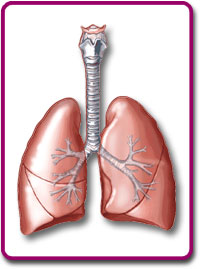

WHAT EFFECT DOES AIR POLLUTION HAVE ON ASTHMA? Introduction | Do you or someone you know have asthma? What is it? What causes this disease? Some think that increased levels of air pollution are responsible for increasing numbers of asthma sufferers.
In this WebQuest you’ll find out the answers to these questions and also do some research into the debate about what may be causing increased incidents of asthma. | <a onClick="window.open('/olcweb/cgi/pluginpop.cgi?it=jpg::::/sites/dl/free/0078807239/179000/lungs.jpg','popWin', 'width=NaN,height=NaN,resizable,scrollbars');" href="webquest.html#"><img valign="absmiddle" height="16" width="16" border="0" src="../../../../olcweb/styles/shared/linkicons/image.gif"> (14.0K)</a> |
Top
Task Your job in this WebQuest is to develop an educated opinion as to whether or not air pollution causes higher rates of asthma. You’ll need to learn what asthma really is – and what
it isn’t. You’ll also need to find out the difference between an asthma cause and a trigger, and the factors that are involved in the development of asthma, such as smoking and genetic
predisposition. And you’ll look at evidence that may link increased levels of air pollution with increased numbers of asthma cases in a population. Once you’ve done your research and formed your opinion, you’ll create a project that will reflect your opinion. It will be developed and presented from the perspective of a specific
member of society, such as doctor, parent, researcher, member of industry, etc. Your project may be an informational brochure or multimedia presentation. It should present your opinion and be delivered from the perspective you’ve chosen, keeping your specific
audience in mind. Your goal is to convince them that your conclusion is correct, and to encourage them to take appropriate action. Top
Resources http://www.lungusa.org/site/apps/s/content.asp?c=dvLUK9O0E&b=34706&ct=67515
Because asthma is usually triggered by a combination of factors, it pays to become familiar with them. Your awareness can save your, or someone else's life.
- What is the difference between asthma and allergies?
Background on Asthma: http://www.aafa.org/display.cfm?id=8
Allergy Facts Quiz: http://www.asthmaandallergies.org/QuizQuestions6.html
Asthma Quiz Questions will increase your awareness of the effect that allergies have on our society.
FreeBreather: http://www.asthmalearninglab.com/
Indoor Air Pollution: http://www.epa.gov/iaq/pubs/hpguide.html
Outdoor Air and Health: http://pdf.wri.org/ehi_outairind.pdf http://pdf.wri.org/ehi_outairdev.pdf
Recognizing Asthma Symptoms http://www.mayoclinic.com/invoke.cfm?objectid=E05029A1-9E99-427B-BE47BA91B7BD70B5&dsection=2
Signs and symptoms of asthma are discussed by the notorious Mayo Clinic.
Indoor Asthma Triggers: http://www.epa.gov/iaq/asthma/triggers.html
Reducing Air Pollution: http://www.zone10.com/tech/NASA/Fyh.htm http://www.cleanairprogress.org/news/benefit_10_01.asp
A discussion of clean air plans for 5 USA metropolitan areas.
Top
Time 1-2 weeks. Top
Process Where does this Internet research lead you? Once you’ve done your research, decide what you think about this issue. Do you think that increased levels of air pollution cause higher
rates of asthma? Choose a perspective from which to develop your presentation. This perspective may be that of a doctor, parent, student, member of industry, researcher, or another that you decide
upon. Remember that there is a specific audience for each of these perspectives, and your job is to inform this audience. For example, a parent may be concerned either that their child
may develop asthma from air pollution in the school and surrounding areas, or that there is unnecessary money being spent on reducing indoor air pollutants that are not a health hazard.
The parent’s audience might be parents of their students’ classmates or members of the local school board. An industry representative’s audience may be members of the community or
local government officials.
Developing Your Presentation http://desktoppub.miningco.com/compute/ http://www.physics.uiuc.edu/Education/398ST/Fall01/Presentations/Presentations.pdf
A link to effective oral presentations. Top
Conclusion In the process of completing this WebQuest, you’ve not only become informed about asthma, you have developed important critical thinking skills. You have learned that there are often
many factors involved in an issue and how to examine these different aspects. You have read information to answer key questions about a topic, and you have formed your own educated
opinion. You’ve also learned about writing persuasively in order to convince your audience, and put that to work by creating your own presentation. These skills will serve you well
as you form opinions on other issues in the future. Congratulations on a highly productive endeavor! Top
|